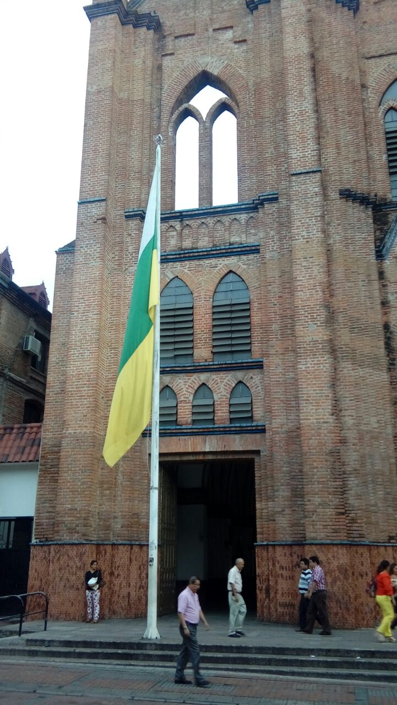
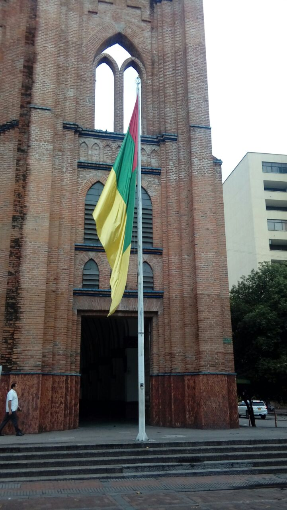
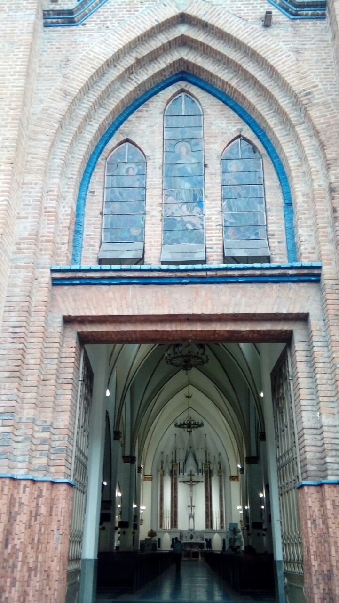
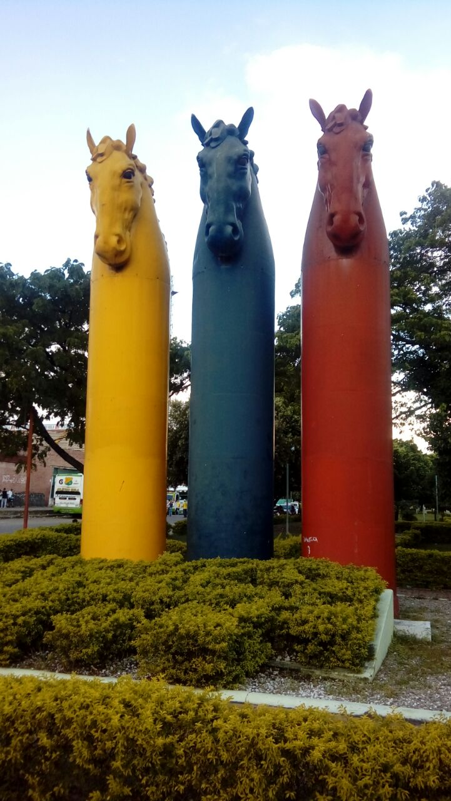
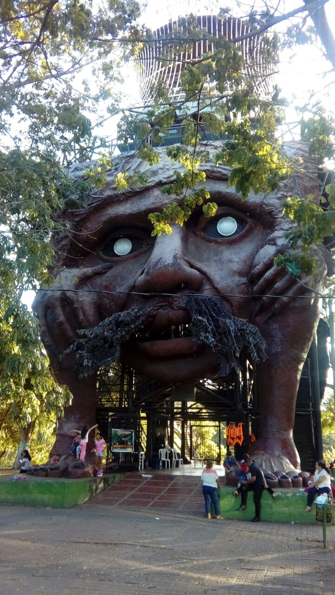

Both of the flags have a similar design to the national flag. The only thing that changes are the colors and the fact that all three stripes are the same size. Each department has it’s own flag and subsequently each department capital also has it’s own flag. The first flag is the Huila department flag. These are the color meanings, in order from top to bottom. White represents the snowy mountains and the honesty of its people. Green represents the exuberance of the land and the hope for a better future. Yellow represents the vibrancy of crops that results from the effort of farm workers. Enjoy this small virtual tour of my beloved Neiva! Hopefully, by the end, you'll even be enticed to visit!
This one is the capital flag representing Neiva. These are the color meanings, in order from top to bottom. Red represents the courage and love of freedom of its people. Green represents a tribute to man, the work and creative effort, as well as its earthly culture, and as a symbol of hope. Yellow represents the nobility, leadership, and spirituality of Neiva’s people, and the natural wealth of the territory.
The two pictures below are of Neiva’s main church, located in the heart of the city, known simply as “La Catedral” (“The Cathedral”). It is a pretty impressive structure and the inside is quite beautiful and imposing. As a kid, I remember walking in for the first time and feeling a sense of awe and even feeling a bit intimidated. Even now, every time I attend mass, I am still amazed.
Below is the “Monumento al Caballo Colombiano” (Monument to the Colombian horse) or we simply refer to it as the horses monument. As it’s name aptly implies it represents a tribute to these beautiful creatures that are so ingrained in the culture and have a prominent presence in every national celebration.
This last picture features “El Mohan” monument. It represents the mystical and mythological pre-Colombian era. It is the first thing that greets people when they visit “Island Park”. There is a beautiful panoramic view of the park, once you get to the top. There is a cable car installed that you can also ride. It was unveiled in 2003 and I remember being a bit freaked out by its imposing structure, because besides its size, it seems a bit diabolical to me. I’ll admit that even looking at this picture gives me the jitters, so imagine my feeling when I saw it up close!
